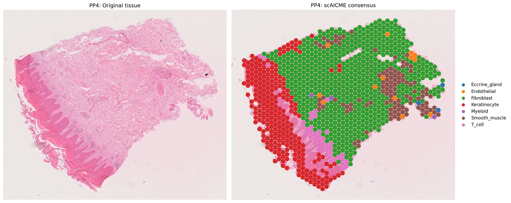

scAICME
Marker-guided annotation of single cells and spatial tissue sections.
A tissue-specific marker panel identifies candidate seed cells. Classifiers learn from those seeds, assign labels and record how often their predictions agree.


Datasets and notebooks
Full study manifest ↗Open a notebook by tissue and assay. Each data guide gives the public source and the files the analysis expects.
| Tissue | Single-cell RNA-seq | Spatial transcriptomics |
|---|---|---|
| PBMC | PBMC 68K ↗ | — |
| Skin | GSE173706 · data only ↗ | GSE225475 ↗ |
| Oral | GSE215403 ↗ | GSE208253 ↗ |
| Breast | GSE161529 ↗ | GSE243022 ↗ |
| Lung | GSE127465 ↗ | GSE292299 ↗ |
Spatial results
Original figures ↗These four scAICME measurements agree between the manuscript and the saved notebook outputs. Counts below are the spots in each notebook’s final comparison graph.
| Tissue | Spots | Coherence | Inconsistency | Moran’s I |
|---|---|---|---|---|
| Skin | 7,184 | 0.834363 | 0.165637 | 0.443570 |
| Oral SCC | 24,921 | 0.751890 | 0.248110 | 0.262611 |
| Breast | 3,216 | 0.766428 | 0.233572 | 0.382354 |
| Lung NSCLC | 28,531 | 0.727955 | 0.272045 | 0.289200 |
Coherence measures the fraction of neighbouring pairs with matching labels. The results guide records differences in comparator values, method names and spot counts across the two sources.
The manuscript
scAICME: Adaptive Marker-Guided Semi-Supervised Framework for Single-Cell RNA-seq and Spatial Transcriptomics Data Analysis
Snehalika Lall*, Adityarup Laha*, Jayant Jha, Sanghamitra Bandyopadhyay and Raghunath Chatterjee.
*Equal contribution. The notebooks document the tissue-specific analyses. The manuscript also describes a later hierarchical classifier.
Citation metadata ↗